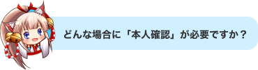
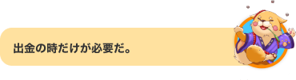
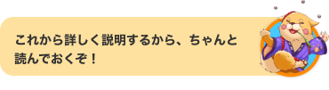
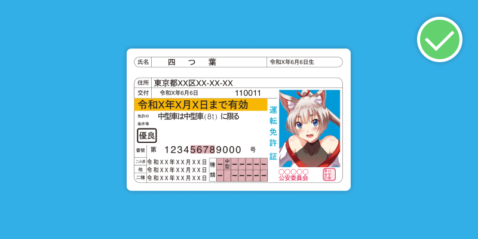
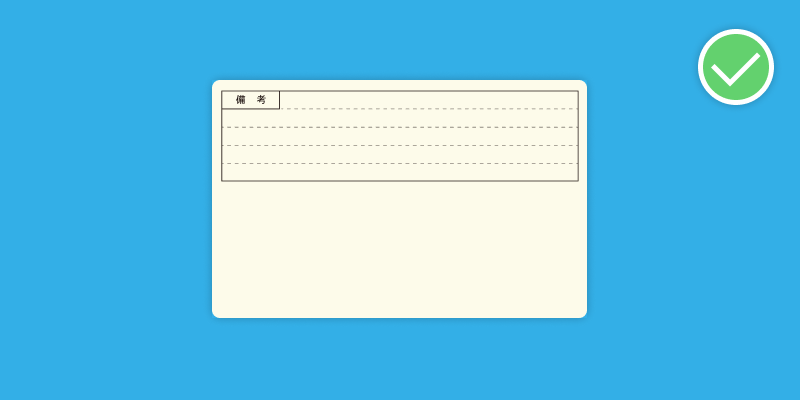
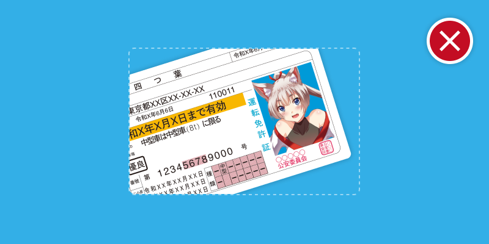
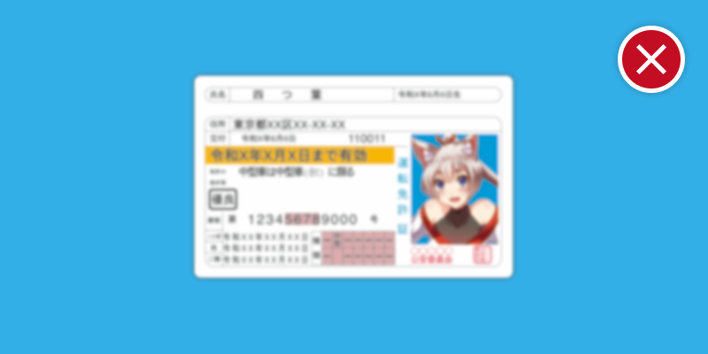

本人確認はマハラジャが会員の身分を確認するための必要な手続きとなります。ライセンスの規制、及びより安全でスムーズに出金できるために、出金申請をいただいたお客さんにご本人様確認をお願い申し上げます。
出金申請の際に、本人確認するようにとメッセージが出て、本人確認の手続きを案内します。
メンバーページからも本人確認を行えます。書類をご提出いただいた後、できるだけ早めに審査を完了するように、尽力いたします。
・書類の四つ角がきちんと画像に入っていることをご確認ください。
・編集したり、トリミングしたりしないでください。
・鮮明で傾いていない画像をご用意ください。
・有効期間内の書類をご提供ください。
・JPGまたはJPEGのみ。(待確認)
・運転免許証／運転経歴証明書
・写真付き住民基本台帳カード
・パスポート
・マイナンバーカード
・在留カード／特別永住者証明書
上記のいずれか一つが必要となります。パスポートは写真付きのページのご提出、その他は書類の両面の提出をお願いいたします。

OK例：書類が切れずに、4つ角がきちんと全部入っている。文字がきちんと鮮明に写っている。

良い例：本人確認書類は、パスポート以外、書類の両面の写真が必要となります。

NG例：書類が切れていて、4つ角がきちんと入っていない。

NG例：画像が不鮮明で、文字が見えにくい。
書類をご提出いただいた後、できるだけ早めに審査を完了するように尽力いたします。審査が終わり次第、メールで連絡させていただきます。